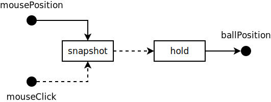
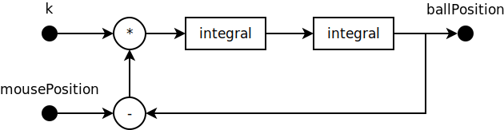

Gergely Patai
A program that interacts with its environment at a speed dictated by the environment. (Gérard Berry, 1989)
In other words, (soft or hard) real-time systems, e.g. embedded systems or games.
BUT: Nowadays the term ‘reactive programming’ seems to be strongly associated with data-flow networks or streams.
ballPosition = hold(snapshot(mousePosition, mouseClick))

snapshot : (Behaviour〈α〉, Event〈β〉) → Event〈α〉
hold : Event〈α〉 → Behaviour〈α〉
ballPosition =
integral(integral(k * (mousePosition - ballPosition)))

k = abs(lowPass(microphone)) 😁
No need to introduce new variables when adding more stateful processing steps.
No callback hell. The data-flow and temporal behaviour is plain to see.
Respecting referential transparency implies that we cannot observe glitches or inconsistent state.
No side-effects. State is only mutated by localised logic and the ordering of events is explicitly controlled.
Everything that can affect the behaviour of an entity must be accounted for at the time of its declaration.
Thanks to everything being just a value, we can easily apply QuickCheck-style property tests to verify our logic.